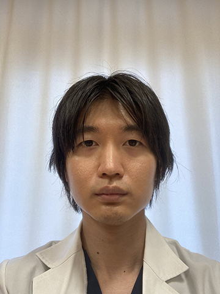

金子 咲（かねこ さき）先生
所属：東京慈恵会医科大学西部医療センター精神神経科・臨床心理士
法政大学大学院人間社会研究科臨床心理学専攻修士課程修了。ひがメンタルクリニックでの勤務を経て2019年5月より現職
趣味：グルメ、ダイビング
頭の中が悩みで占められている時ほど、視野が狭くなり、何とかしようと思ってもなかなか思うようにいかない場合が多いものです。それでも、悩むということは、それだけより良くしていきたいと望む力があるということと考えております。このホームページでの皆さんとのやりとりを通して、悩みの裏にある皆さんの力を見出す糸口を共に見つけていくことができればと考えております。
久保田 幹子（くぼた みきこ）先生
法政大学大学院人間社会研究科（臨床心理学専攻）教授
東京慈恵会医科大学付属第三病院精神神経科・臨床心理士。
1998年〜2000年、ミシガン大学精神神経科にて認知行動療法および精神分析的精神療法の研修。上智大学大学院文学研究科博士後期課程。
資格：臨床心理士、認定森田療法心理療法士、公認心理士
役職：日本森田療法学会副理事長、研修委員会委員長、森田療法の効果判定委員会委員長
専門：森田療法、心理療法、強迫性障害の臨床
主な著書（共著）：「森田療法」臨床心理学への招待、ミネルヴァ書房
「（強迫性障害・治療）心理療法」、臨床医学講座5巻、中山書店など
“悩むことが問題ではなく、悩む力を自分自身の成長のためにどのように生かすのか”を考えさせてくれるのが森田療法だと思っています。女性が直面する問題も一緒に考えていきたいと思います。
黒瀬 有里乃（くろせ ゆりの）先生
東京大学卒業。東京慈恵会医科大学附属第三病院、平川病院への勤務を経て、2025年4月より東京慈恵会医科大学附属病院（本院）勤務。
会員の皆さまがご自分らしく生活を楽しむお手伝いができるよう、心をこめて携わりたいと思います。
塩路 理恵子（しおじ りえこ）先生
東京生まれ。浜松医科大学卒業。精神保健指定医。医学博士。
慈恵医大附属病院、根岸病院勤務を経て、慈恵医大附属第三病院勤務。
東京慈恵会医科大学精神医学講座 准教授を経て、2018年4月より、東京都立大学（旧首都大学東京）健康福祉学部・作業療法学科 教授、東京慈恵会医科大学附属第三病院・森田療法センター 非常勤医長。
対人不安を中心とした神経症、抑うつなどの診療に携わっています。不安の裏に「よりよく生きたい」という思いがあるという森田療法の考え方は悩みを持つ人の支えになるものだと思います。さまざまな森田療法の知恵は自分の日々の生活の参考にもなっています。
趣味は映画鑑賞、読書、美術館巡りなどです。森田療法センターに勤務して植物に少しだけ詳しくなりました。
舘野 歩（たての あゆむ）先生
東京慈恵会医科大学医学部医学科卒業。医学博士。
2008年より2009年まで米国ウェスタンミシガン大学心理学部留学。
2021年4月より、東京慈恵会医科大学附属病院（本院）勤務
2024年10月より、同大学精神医学講座 教授。
専門：森田療法、強迫性障害、身体症状症、緩和ケア
資格：精神保健指定医。日本精神神経学会専門医。日本精神神経学会精神科指導医。日本森田療法学会認定医。
役職：日本森田療法学会理事、日本森田療法学会研修委員、内観医学会評議員、日本精神神経学会精神療法研修委員会委員
自己紹介：会員同士で中々解決できそうにない事に対して、専門家としてわかりやすいコメントを心がけて参ります。
谷井 一夫（たにい かずお）先生
東京慈恵会医科大学卒業後、同附属病院にて研修修了。大学関連病院などで精神医療の地域医療に従事する。2008年7月より東京慈恵会医科大学西部医療センター精神神経科勤務。
資格：精神保健指定医
趣味：スキー、ドライブ、読書、野球観戦
はじめまして。ストレスが高まる現代では心が危機をむかえる事が増えています。そんな時にこのホームページを通じて、少しでも皆様のお役に立てたらと思います。
半田 航平（はんだ こうへい）先生

慈恵医大卒業後、慈恵医大附属柏病院にて研修修了。
2021年4月より東京慈恵会医科大学西部医療センター精神神経科勤務。
直接お会いする形で進んでいくことの多い療法だとは思いますが、インターネットにはインターネットにしかない利点があると思いますので、うまく活用していければと思っております。
矢野 勝治（やの かつはる）先生
慈恵医大卒業後、慈恵医大附属病院にて研修修了。
慈恵医大第三病院や大学関連病院にて精神科領域全般の治療に携わる。
2003年7月より慈恵医大第三病院精神神経科勤務。
2025年4月より東京慈恵会医科大学西部医療センター精神神経科 診療部長代行。
現在は、森田療法や不安障害を中心に、診療・研究・教育を行っている。
資格：精神保健指定医、認定産業医、認定健康スポーツ医
趣味：スポーツ（最近は自分で「する」ことから「見る」ことにかわってきてますが・・・）
自分が関わることで、患者さんが患者さんらしく日々を過ごせるようになれるお手伝いが出来ればと思っています。
渡辺 志帆（わたなべ しほ）先生
所属：東京慈恵会医科大学西部医療センター精神神経科
資格：臨床心理士・公認心理師
法政大学大学院人間社会研究科臨床心理学専攻修士課程修了。
大学院修了後は、精神科領域で勤務をし、その後は産業領域で社員のメンタルヘルスに携わってまいりました。
そして、2024 年 4 月より現職で勤務をしております。
このホームページを通じて、みなさまが自分の持ち味を発揮し、自分らしい生き方が実現できるよう、そのお手伝いをしてまいります。